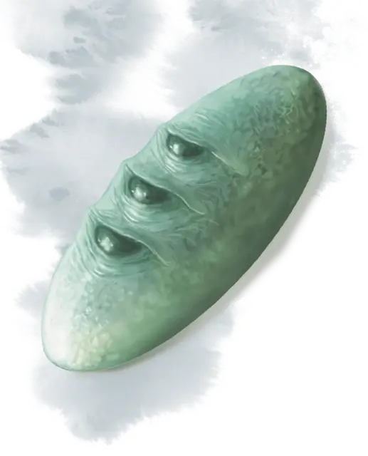

Камень Голорра
Stone of Golorr
Чудесный предмет, артефакт (требуется настройка)

Камень Голорра – глянцевый, зеленовато-серый камень, размером в ладонь вашей руки. Камень на самом деле является аболетом [aboleth] по имени Голорр, превратившийся магическим образом в объект.
Случайные свойства. Камень Голорра обладает несколькими свойствами, определяемыми случайным образом, согласно таблицам, указанных выше:
- 1 малое положительное свойство
- 1 малое отрицательное свойство
Знание легенд. Камень Голорра имеет 3 заряда и восстанавливает 1к3 истраченных заряда каждый день на рассвете. Держа камень, вы можете потратить 1 из зарядов, чтобы наложить заклинание знание легенд [legend lore].
Применяя камень для накладывания этого заклинания, вы напрямую обращаетесь к аболету, который поделится своими знаниями с вами. Аболет не может лгать вам, но данная им информация зачастую бывает расплывчатой или неясной.
Аболету известно местоположение секретного хранилища Лорда Неверембера. Помимо этого, он знает о трёх ключах, необходимых для открытия хранилища, и что внутри него обитает и стережёт богатства золотой дракон Ауринакс.
Ложное воспоминание. Когда ваша настройка на камне Голорра заканчивается, вы совершаете спасбросок Мудрости Сл 16. При провале, вы теряете воспоминания, связанные с камнем, пока он был в вашем расположении, и все знания, полученные с его помощью. Накладывание на вас заклинания снятие проклятия [remove curse], имеет 20% шанс вернуть вам утерянные знания и память, а заклинание высшее восстановление [greater restoration] гарантированно восстановит вам память и знания.
Разум. Камень Голорра – разумный законно-злой магический предмет с Интеллектом 18, Мудростью 15 и Харизмой 18. Он обладает слухом и тёмным зрением в пределах 120 футов. Камень может телепатически связываться с любым существом, что понимает хотя бы один язык. Вдобавок, аболет узнает сокровенные желания любого, кто телепатически обращается к камню.
Камень Голорра жаждет больше знаний и предпочитает не оставаться надолго во владении одного существа. Всякий раз, как камень захочет сменить владельца, он требует, чтобы его как можно скорее передали другому разумному существу.
Если его требованиями пренебрегают, камень попытается взять под контроль своего владельца.
Индивидуальность. Камень Голорра обладает чуждым этому миру разумом, который одновременно высокомерен и жаждет знаний. Он считает себя вечным и бессмертным богом.
Уничтожение камня. В форме камня аболет не является существом и не подлежит эффектам, воздействующих на существ. Камень Голорра невосприимчив ко всем типам урона. Накладывание заклинания антипатия/симпатия [antipathy/sympathy] уничтожает камень, при условии, что выбран эффект антипатия, а само заклинание направлено на изгнание аберраций. Когда заклинание будет наложено таким образом, камень превращается в слизь и уничтожается, а в свободном пространстве, в пределах 30 футов от останков камня появится Голорр. Аболет разъярён уничтожением камня и нападает на любое, попавшееся ему на глаза, существо.